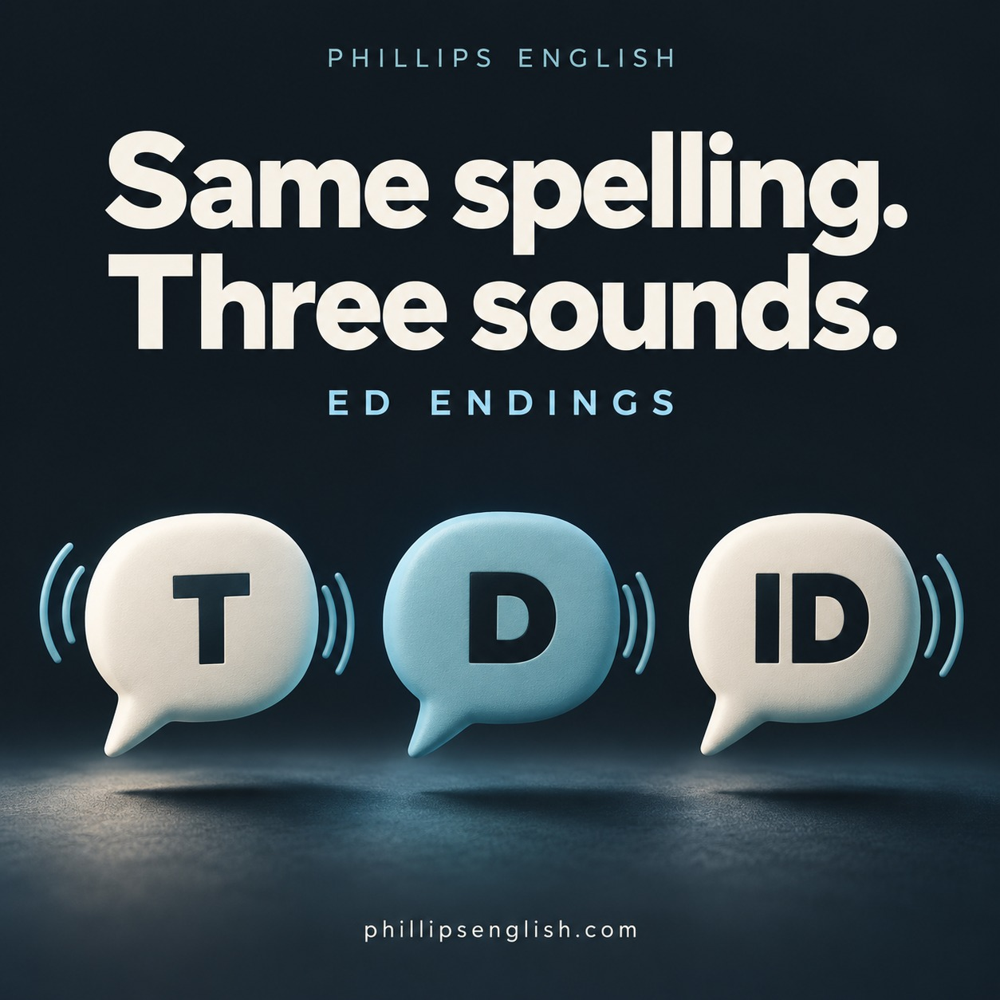

“I work ed, watch ed and finish ed.”
If your past tense verbs keep gaining an extra syllable, those two little letters might be getting a bit too much attention.
English writes the ending as ED, but we pronounce it in three ways: /t/, /d/ or /ɪd/. The last sound of the base verb tells you which one to use.
Listen to the sound, rather than guessing from the spelling. “Like” ends with /k/, so “liked” ends with /t/. That silent E doesn’t get a vote.
The three ED sounds
| Ending | When to use it | Examples |
|---|---|---|
| /ɪd/ (“id”) | After a /t/ or /d/ sound. | wanted, needed, started, decided |
| /t/ | After the other voiceless sounds: /p/, /k/, /f/, /s/, /ʃ/, /tʃ/ and /θ/. | helped, worked, laughed, missed, washed, watched |
| /d/ | After vowels and the other voiced consonant sounds. | played, enjoyed, lived, called, cleaned, managed |
/ɪd/ adds a syllable. /t/ and /d/ don’t. “Worked” /wɜːkt/ and “played” /pleɪd/ each have one syllable. “Wanted” /ˈwɒntɪd/ has two.
Four ways to get it right
1. Start with the base verb
Say “watch” before “watched”. The final sound is /tʃ/, like the end of “match”, so the ending is /t/. Practise the complete word without inserting a vowel between the final sounds.
2. Feel the difference between voiced and voiceless
Gently rest your fingers on your throat. Make a long “ssss”, then “zzzz”. The buzz you feel with “zzzz” is your vocal cords vibrating. This can help you recognise voiced sounds. Check /t/ and /d/ first, because those take the /ɪd/ ending.
3. Clap the syllables
Work → worked: one clap each. Want → wanted: one clap, then two. Visit → visited: two claps, then three. If “worked” gets two claps, you’ve sneaked in an extra vowel.
4. Put it into a sentence you actually use
Practising a list is useful. Next, try these:
- “I worked with a new team.” /t/
- “I managed a project.” /d/
- “I presented the results.” /ɪd/
Record yourself saying all three. Listen back for the endings, then try again at a comfortable conversational pace. Give the final sound enough space without adding “uh” after it.
Your turn
Say these six verbs aloud. Which ending do you hear: /t/, /d/ or /ɪd/?
helped · called · decided · watched · cleaned · invited
Check your answers
helped /t/ · called /d/ · decided /ɪd/ · watched /t/ · cleaned /d/ · invited /ɪd/
Now use three of them to tell me about your week. That’s where the practice starts earning its keep.
These small endings help you talk clearly about what you did, achieved or experienced. Aim for a pattern you can use comfortably while speaking. It takes a few goes, and that’s absolutely fine.
For feedback on your own speech, have a look at my pronunciation and fluency coaching.
Further reference: BBC Learning English: ED endings.